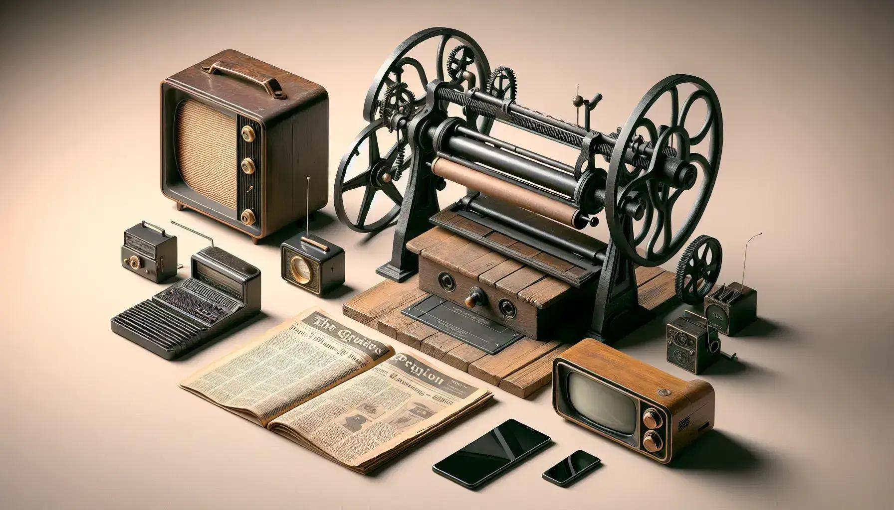
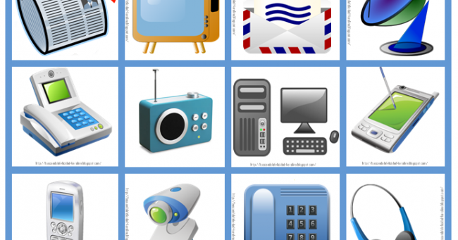
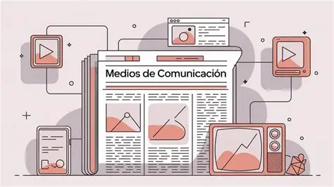
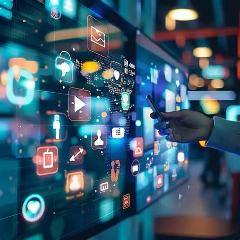

La evolución de la comunicación humana
Desde tiempos antiguos, los seres humanos han buscado formas de comunicarse. Las primeras formas incluyeron señales de humo, pinturas rupestres y mensajes escritos.
Con la invención de la imprenta en el siglo XV, la difusión de información se volvió mucho más rápida. Posteriormente aparecieron el periódico, la radio, la televisión y finalmente Internet.

Los medios de comunicación se dividen en impresos, audiovisuales y digitales. Los impresos incluyen periódicos y revistas; los audiovisuales abarcan radio y televisión; mientras que los digitales comprenden páginas web, redes sociales y aplicaciones móviles.

Los medios permiten informar, educar y entretener a la población. También ayudan a difundir conocimientos, noticias y acontecimientos relevantes para la sociedad.

La tecnología continúa transformando la manera en que las personas se comunican. La inteligencia artificial, las redes sociales y las plataformas digitales están cambiando el acceso a la información en todo el mundo.
